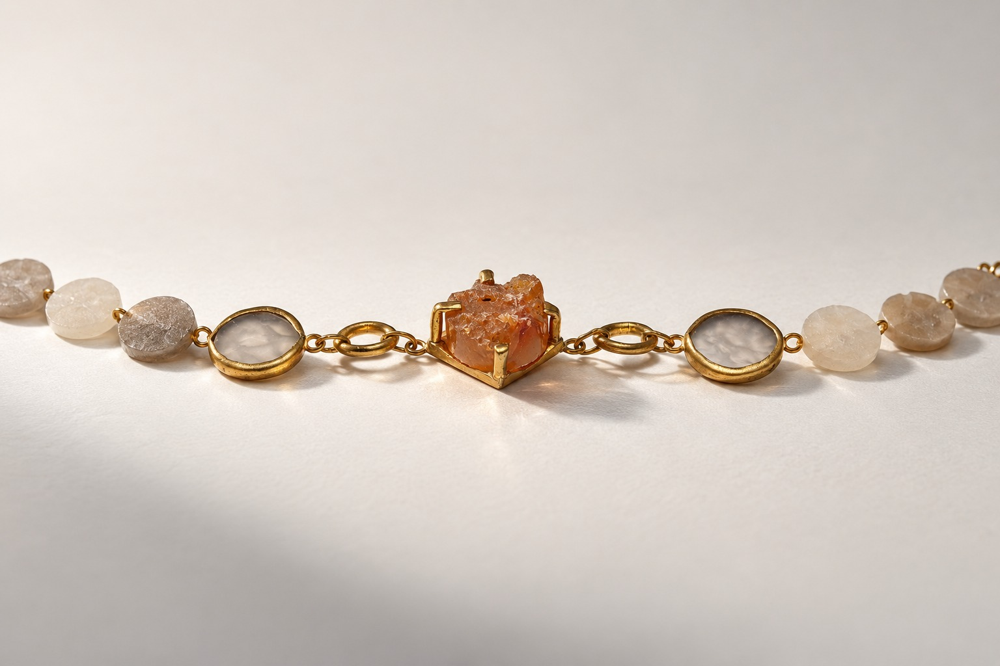
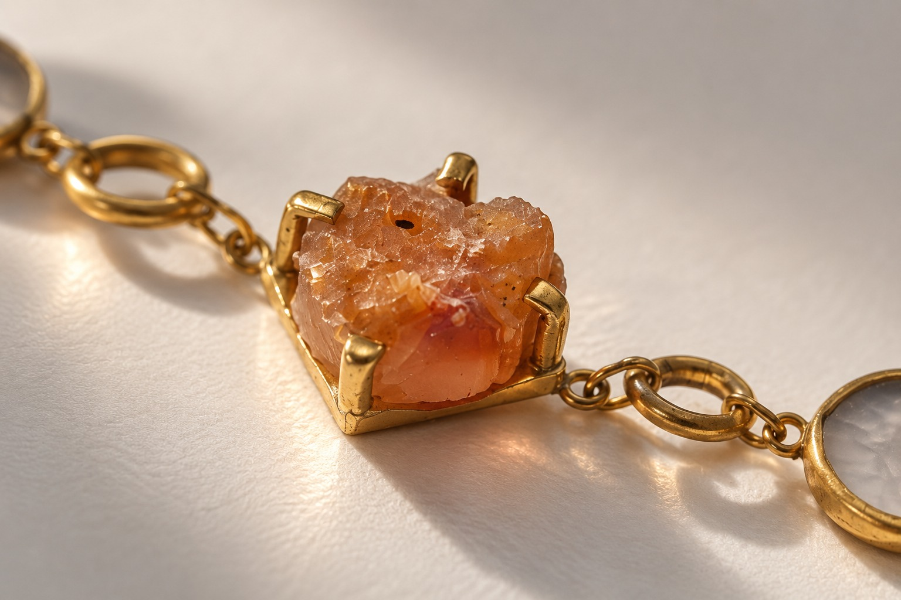
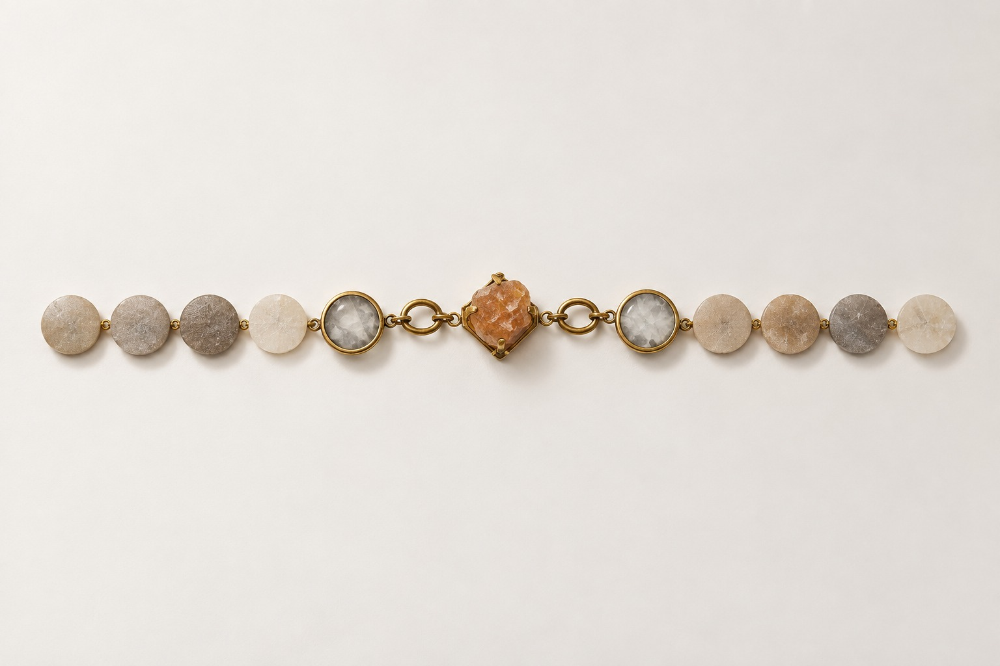
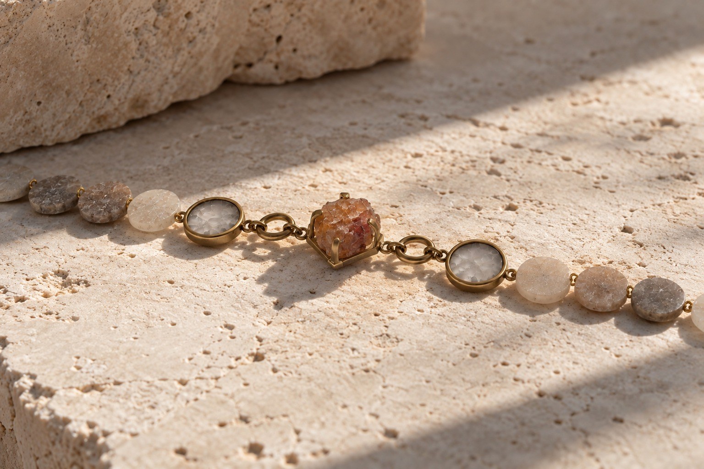
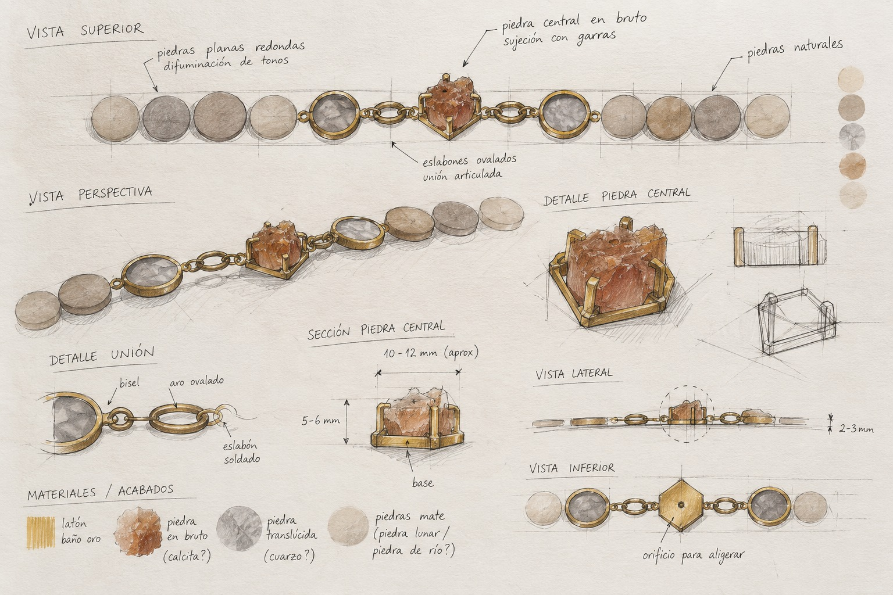
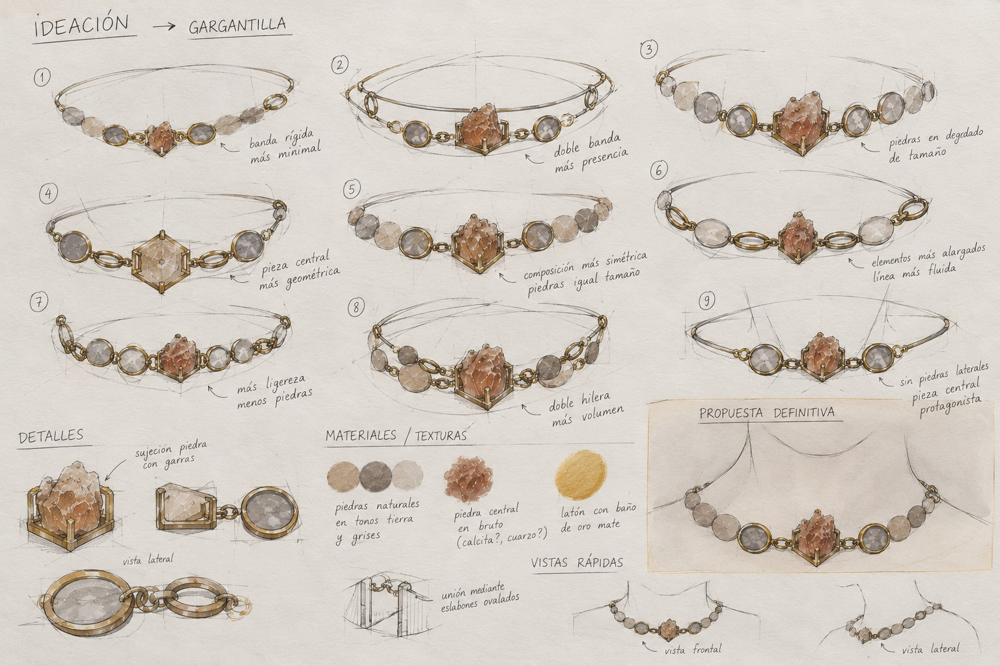
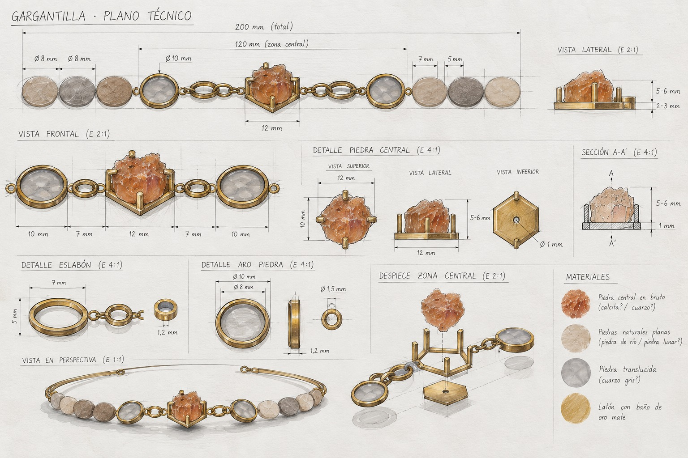
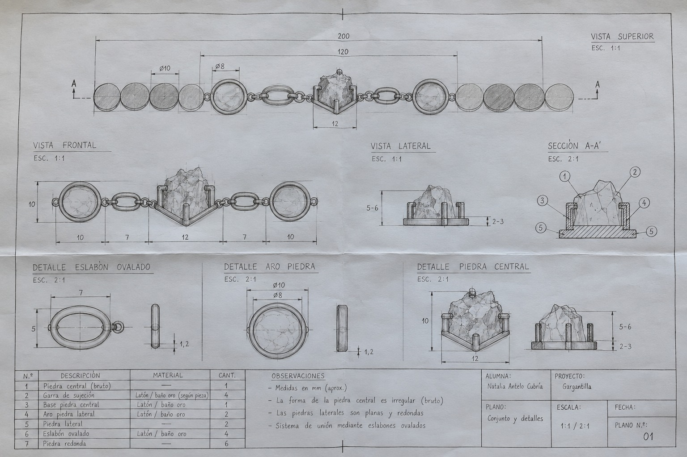

FALLA

FALLA comenzó con ágatas cuyas vetas, colores y contornos diferían entre sí. Cortarlas, conformarlas y pulirlas a mano conservó esas diferencias, en lugar de hacer todas las piedras idénticas.
El ágata más irregular se sitúa en el centro. El latón la sostiene mediante una estructura visible; anillas, engastes y discos de ágata crean una secuencia más ordenada a ambos lados. La composición pasa de un punto focal desigual a elementos repetidos.
El latón actúa como unión y soporte. Su geometría conecta piedras de distintas formas en un collar que puede montarse y llevarse. Los bocetos de desarrollo y los planos documentan esa construcción.







